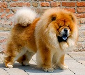
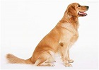
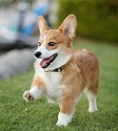
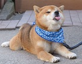

Bichon Frise
Chow Chow
The Golden Retriever is one of the most popular dog breeds in the U.S. The breed’s friendly, tolerant attitude makes him a fabulous family pet, and his intelligence makes him a highly capable working dog. Golden Retrievers excel at retrieving game for hunters, tracking, sniffing out drugs, and as therapy and assistance dogs. They’re also natural athletes, and do well in dog sports such as agility and competitive obedience.
Originally bred to herd cattle, sheep, and horses, the Pembroke Welsh Corgi is an active and intelligent dog breed. Easy to train and eager to learn, Pembrokes are great with children and other pets, and you can find them in four different coat colors and markings.
The Shiba Inu dog breed was originally bred to flush birds and small game, and was occasionally used to hunt wild boar. He is one of Japan’s six native breeds: Akita (large), Kishu, Hokkaido, Kai, Shikoku (medium), and Shiba (small). He is known for his spirited personality, small upright ears, and cat-like agility. Today he serves primarily as a companion dog in Japan and the United States.
First Inmage Second Inmage Third Inmage Fourth Inmage Fifth Inmage